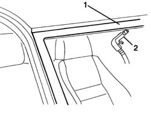

7035A04 WINDSCREEN - Removing penetration
- Path
- Procedures > 70 FITTINGS > 7035 BODYSHELL WINDOWS > 7035A windscreen > 7035A04 WINDSCREEN - Removing penetration
- Kind
- repair procedure (removal / refitting; the operation number is the code)
- Applies to
- all engines; all production periods
- Interactive page
- https://sloeber94.github.io/elrnDB-a156/en/#/3238773
Applies to: all engines; all production periods
 Removing
Removing
 Refitting
RefittingDepending on the location of the penetration, remove the interior and/or exterior components covering the edge of the windscreen.
1. Wet with soapy water the external area where the leak occurs.
2. Blow compressed air from inside and identify the point of the leak.

Applies to: all engines; all production periods
Refitting
RemovingIf the leak is small, seal the relevant part from the inside and wait for the sealant to dry. Then repeat the test.
If the penetration is more extensive, refer to Op. 7035A14 (Bonded type) windscreen GLASS - R.R. - Includes. cleaning edges of glass and housing in bodyshell
Refit the parts removed previously.